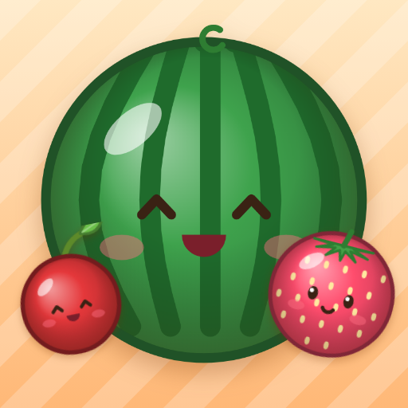

Política de Privacidad de Fruit Drop
Última actualización: 16 de noviembre de 2026
- Sin anuncios
- Sin recopilación de datos
- Funciona sin internet
1. No recopilamos datos personales
Fruit Drop no recopila ninguna información que pueda identificarte: ni tu nombre, ni tu correo electrónico, ni tu ubicación, ni tu número de teléfono, ni ningún otro dato personal. No necesitas crear una cuenta ni iniciar sesión para jugar.
2. No recopilamos datos de uso
Tus partidas son solo tuyas. Fruit Drop no rastrea tu actividad dentro de la aplicación: no registra las partidas que juegas, tus puntuaciones ni el tiempo que pasas jugando. La aplicación no incluye servicios de analítica ni de rastreo de terceros.
3. Datos guardados solo en tu dispositivo
Para que el juego recuerde tu progreso, Fruit Drop guarda en tu propio teléfono dos datos: tu puntuación récord y si tienes el sonido activado o desactivado. Estos datos nunca salen de tu dispositivo, y se borran al desinstalar la aplicación o al eliminar sus datos desde los ajustes de Android.
4. Sin permisos y sin conexión a internet
Fruit Drop no solicita ningún permiso del dispositivo (cámara, micrófono, ubicación, contactos ni archivos) y funciona completamente sin conexión a internet.
5. Sin publicidad
Fruit Drop no contiene ningún tipo de publicidad. Puedes disfrutar del juego sin interrupciones ni anuncios de terceros.
6. Sin compras dentro de la aplicación
Fruit Drop no ofrece compras dentro de la aplicación y nunca te pedirá información de pago.
7. Apta para todas las edades
Como no recopilamos datos de ningún usuario y el juego no tiene contenido inapropiado, Fruit Drop es segura para jugadores de todas las edades, incluidos los niños.
8. Cambios en esta política de privacidad
Podríamos actualizar esta política de privacidad de vez en cuando. Cualquier cambio se publicará en esta misma página, junto con su fecha de actualización.
9. Contáctanos
Si tienes alguna pregunta sobre esta política de privacidad, puedes escribirnos a: geangu@gmail.com